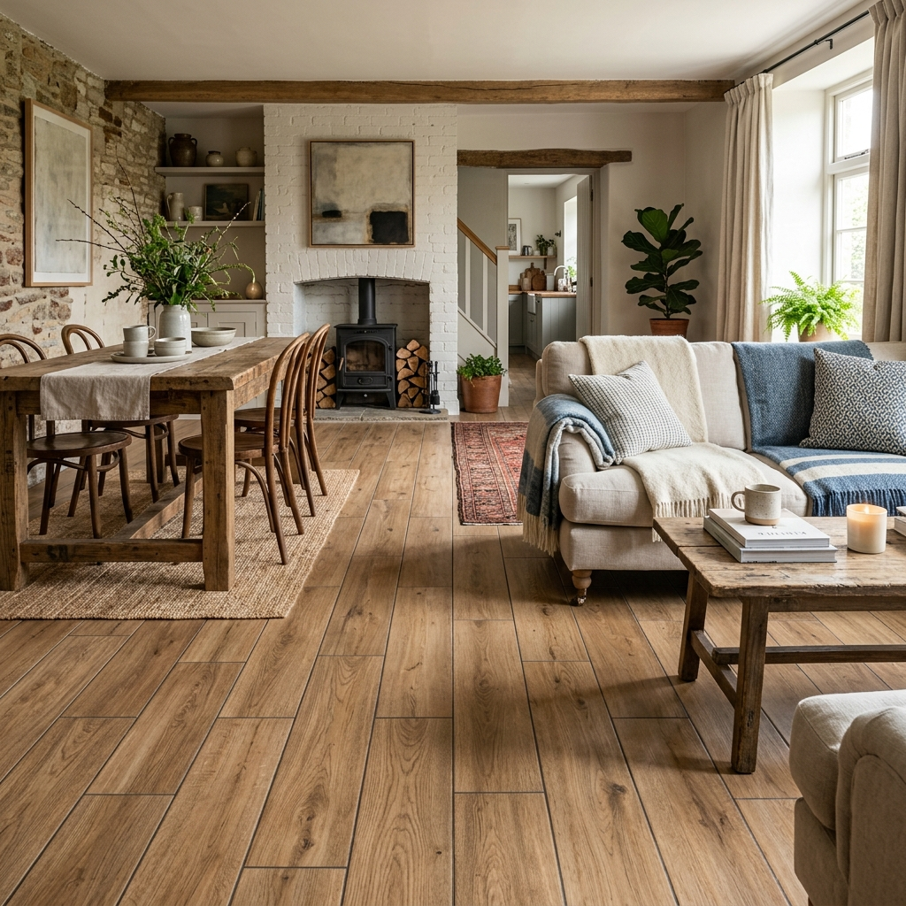
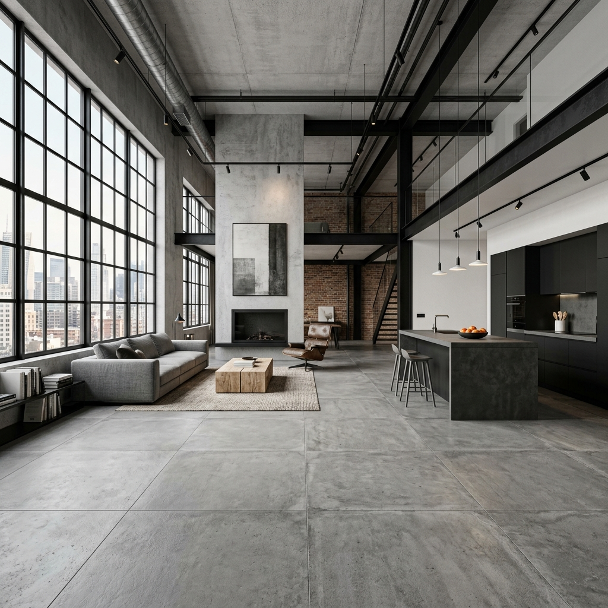
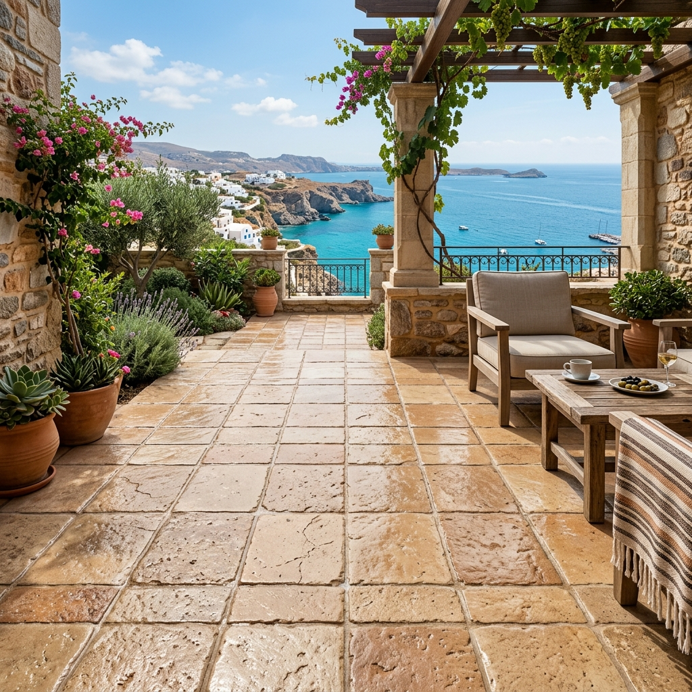

Chez OC Stone, venez découvrir une large gamme de carrelages
La société OC Stone vous propose de réaliser vos projets à travers une gamme diversifiée de style d’effets (Marbres, bois, ciments et pierres) et un grand nombre de dimensions différentes. Nos conseillers sont à l’écoute pour réaliser des devis gratuits sur le matériel, la pose et la livraison.
Nos carrelages Effet marbres
Apporter un peu de luxe avec le carrelage effet marbre en grès cérame au sol ou mural pour toutes les pièces de votre maison. Créer différentes ambiance en variant les associations effets marbres avec d’autres types de matériaux ou d’autres effets comme le bois ou le ciment. Chez OC Stone, un large choix de dimensions différentes vous permettent de réaliser tous vos projets.

Nos carrelages Effet Bois
Retrouver une ambiance chaleureuse avec nos carrelages effet bois imitant à la perfection un parquet. Extérieur ou intérieur et avec un grand choix de couleurs, opter pour le grès cérame pour embellir vos terrasses ou vos pièces de vie.

Nos carrelages Effet Ciments
Vous êtes à la recherche d’une ambiance loft industriel ou urbain, nous avons la solution avec notre carrelage grès cérame effet ciment. Un large choix de dimensions et de couleurs différentes, vous permettent de réaliser différentes ambiances intérieures ou extérieures.

Nos carrelages Effet Pierres
Amoureux de l’authenticité avec la pierre naturelle, ne cherchez plus. OC Stone vous propose du carrelage grès cérame imitant à la perfection l’aspect pierre naturelle avec des couleurs différentes. (Bali, Travertin……) Avec un large choix de dimension, ce type de carrelage est idéal pour l’intérieur ou l’extérieur.

Besoin d'un conseil personnalisé ?
Nos experts sont là pour affiner votre choix et vous proposer un chiffrage précis.
Nous rendre visite en showroom